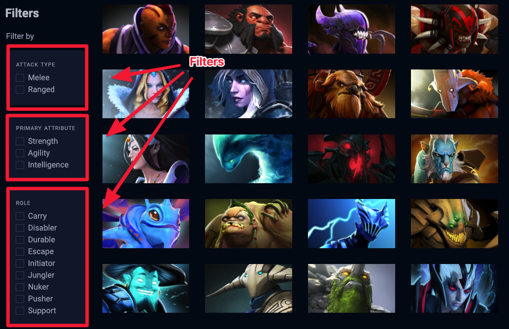
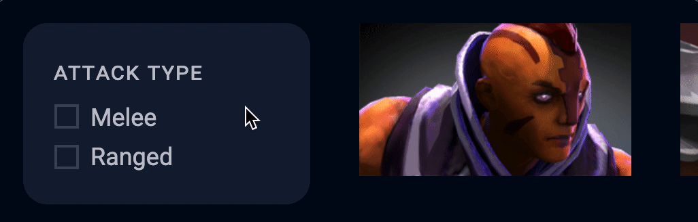

üõ†Ô∏è Dota Heroes: Filtering heroes (Part 1)
We want to let users filter the list of heroes according to three categories:
Attack type
Primary attribute
Role

Let’s talk about the HTML for the filters before we continue.
Structure for the filters
All filters are placed in a <div> with a .filter class. This lets us use event delegation to listen to the change in all filters at the same time.
Each category of filters is wrapped in another <div> with a .filter-group class. We’ll give each .filter-group an id that corresponds to its category so it’s easier for us to locate it.
<div class="filters">
<div class="filter-group" id="attack-type"> ... </div>
<div class="filter-group" id="primary-attribute"> ... </div>
<div class="filter-group" id="role"> ... </div>
</div>
In each .filter-group, there are checkboxes.
<div class="filter-group" id="attack-type">
<div class="checkbox"> ... </div>
<div class="checkbox"> ... </div>
<div class="checkbox"> ... </div>
</div>
Here, we use a checkbox div to wrap the checkbox input element to create a custom input style. We need this because browsers limit us from styling a real checkbox.
<div class="checkbox">
<input type="checkbox" id="melee" />
<label for="melee">
<span class="checkbox__fakebox"></span>
<svg height="1em" viewBox="0 0 20 15">
<use xlink:href="#checkmark"></use>
</svg>
<span>Melee</span>
</label>
</div>
The .checkbox__fakebox is the squarish-looking checkbox container while the svg is a tick. If you click on a checkbox, the tick should show up.
(I already taught you how to write this kind of CSS in the Todolist, so I’m skipping the CSS in here).

Filtering
We want to let users filter the list of heroes according to three categories:
Attack type
Primary attribute
Role
Here, we can listen for a change event on .filters. (Event delegation pattern).
const filtersDiv = document.querySelector('.filters')
zlFetch(`${dotaApi}/heroStats`)
.then(response => {
// ...
filtersDiv.addEventListener('change', event => {
// ...
})
})
change will only trigger when an input element gets changed. In this case, it only triggers when a checkbox gets checked (or unchecked).
How checkbox filters work
Checkboxes are different from radio buttons.
Radios let you choose one option from a list of options, while checkboxes let you select many options from the list.
When used in a filtering system, checkboxes have this trait:
If no checkboxes are checked, show everything.
If one checkbox is checked, show results from that one selection.
If two checkboxes are checked, show results that match either selection.
Here’s an example. Say you’re trying to book a place to stay on Airbnb. There are four possible types of rooms:
Entire house
Private room
Hotel room
Shared room
If you select nothing, it means you’re open to viewing all possible options.
If you select Private room, you expect to see private rooms in your search results.
If you select both private and hotel rooms, you expect to see both private and hotel rooms in the search results.
Filtering by attack type
Every hero in Dota is classified into two attack types:
Melee
Ranged
To filter heroes by their attack types, we need to know which attack types are checked.
Here’s one way to do this:
We can use the id to find the checkbox for one attack type.
Then, can use checked to test if the checkbox is checked.
We can do the same for ranged. (And also the same for EVERY filter).
filtersDiv.addEventListener('change', event => {
const melee = document.querySelector('#melee')
const isMeleeChecked = melee.checked
const ranged = document.querySelector('#ranged')
const isRangedChecked = ranged.checked
// ...
})
You can imagine the amount of code to grab all checkboxes.
There’s a shorter, cleaner way.
Selecting the checked checkboxes
First, we know the attack type .filter-group has an id of #attack-type. We can use querySelector to select this group.
Then, we use input:checked to select input elements that are checked
filtersDiv.addEventListener('change', event => {
const attackTypeDiv = document.querySelector('#attack-type')
const selectedCheckboxes = [...attackTypeDiv.querySelectorAll('input:checked')]
console.log(selectedCheckboxes)
})
You can combine these two lines into a single querySelectorAll statement. The selector will look a little more complicated.
filtersDiv.addEventListener('change', event => {
const selectedCheckboxes = [...document.querySelectorAll('#attack-type input:checked')]
})
Getting the attack types
If you look at each hero’s object, you’ll notice the attack_type property contains either Melee or Ranged.
If you look at the HTML, you’ll notice I chose to add the attack type as an id to each checkbox. Here’s the example for melee.
<div class="checkbox">
<input type="checkbox" id="melee" />
<label for="melee"> ... </div>
</div>
When we match attack types, we don’t need the <input> element. We just need the id of each selected attack type. We can use map to return an array that contains all selected attack types.
filtersDiv.addEventListener('change', event => {
const selectedAttackTypes = [...document.querySelectorAll('#attack-type input:checked')]
.map(checkbox => checkbox.id)
console.log(selectedAttackTypes)
})
Filtering the heroes
We want to get a list of heroes that has an attack type that was selected. This means we need to filter the heroes.
filtersDiv.addEventListener('change', event => {
// ...
const filtered = heroes.filter(hero => {
// ...
})
})
Each hero’s attackType property is written in title case. But the entries in selectedAttackTypes are lowercase. Their cases don’t match. (Melee vs melee).
We need to match their cases. We can do this by making everything lowercase.
filtersDiv.addEventListener('change', event => {
// ...
const filtered = heroes.filter(hero => {
const attackType = hero.attack_type.toLowerCase()
})
})
If the hero’s attackType is found in selectedAttackTypes we return a truthy expression to include the hero.
filtersDiv.addEventListener('change', event => {
// ...
const filtered = heroes.filter(hero => {
const attackType = hero.attack_type.toLowerCase()
return selectedAttackTypes.includes(attackType)
})
})
Updating the DOM
After filtering the heroes, we need to update the DOM with the new list of filtered heroes.
To do this, we remove the current list of heroes by setting .heroes-list's innerHTML to ''.
filtersDiv.addEventListener('change', event => {
// ...
heroesList.innerHTML = ''
})
Then, we recreate the list of heroes from the filtered selection. After creating the list of heroes, we add them back into the DOM.
filtersDiv.addEventListener('change', event => {
// ...
const filtered = heroes.filter(/*...*/)
heroesList.innerHTML = ''
filtered.forEach(hero => {
const li = document.createElement('li')
li.classList.add('hero')
li.innerHTML = `
<a href="#">
<span class="hero__name"> ${hero.localized_name} </span>
<img src="https://api.opendota.com${hero.img}" alt="${hero.localized_name} image">
</a>
`
heroesList.appendChild(li)
})
})
Unchecked filters
When you uncheck the filters, you’ll notice there are no more heroes in the list.
Here’s why:
selectedAttackType returns an empty array when no filters are checked[].includes will always return false (since the array is empty to begin with!).
But as you read above, if no filters are checked, we want to show all heroes. The easy way out is to return all heroes if no attack types were selected.
filtersDiv.addEventListener('change', event => {
// ...
const filtered = heroes.filter(hero => {
if (selectedAttackTypes.length === 0) return true
const attackType = hero.attack_type.toLowerCase()
return selectedAttackTypes.includes(attackType)
})
})
We’ll continue to filter the other two categories in the next lesson.